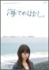

1st -- Spitz -- May 1991 -- POCH-1080
2.Natsu no Mamono ("Summer devil") / Ninoude no Sekai ("The world of upper arm") -- June 1991 -- PODH-1044
3.Majo-tabi ni Deru ("Going on a witch trip") / Tori ni Natte ("Become a bird") -- Oct 1991 -- PODH-1058
4.Hoshi no Kakera ("A piece of the planet") / Maameido ("Mermaid") -- Aug 1992 -- PODH-1088
5.Hinata no Mado ni Akogarete ("Longing for the sunny window") / Kosumosu ("Cosmos") -- Nov 1992 -- PODH-1099
6.Hadaka no Mama de ("Naked as we are") / Kokoro no Soko kara ("From the dephts of my heart") -- July 1993 -- PODH-1155
7.Kimi ga Omoide ni Naru mae ni ("Before you become a memory") / Natsu ga Owaru ("Summer will end") -- Oct 1993 -- PODH-1170
8.Sora mo Toberu Hazu ("I can fly even to the sky") / Bebiifeisu ("Babyface") -- Apr 1994 -- PODH-1196
9.Aoi Kuruma ("Blue car") / Neko ni Naritai ("I want to become a cat") -- July 1994 -- PODH-1210
10.Supaidaa ("Spider") / Koi wa Yuugure ("Love is a Sunset") -- Oct 1994 -- PODH-1227
11.Robinson / Ore no Subete ("My everything") -- April 1995 -- PODH-1243
12.Namida ga Kirari ("Tears sparkle") / Lunaluna -- July 1995 -- PODH-1265
13.Cherii ("Cherry") / Baniigaaru ("Bunnygirl") -- Apr 1996 -- PODH-1305
14.Nagisa ("The beach") / Tabibito ("Traveller") -- Sep 1996 -- PODH-1320
15.Skaaretto ("Scarlet") / Umeboshi ("Plum") -- Jan 1997 -- PODH-1335
16.Yume janai ("Not a dream") / Kimi dake o ("Only you") -- Apr 1997 -- PODH-1355
17.Unmei no Hito ("Person of destiny") / Nakayoshi ("Friendly") -- Nov 1997 -- PODH-1387
18.Tsumetai Hoho ("Cold cheek") / She-she! ("Thanks!") -- Mar 1998 -- PODH-1410
19.Kaede ("Maple tree") / Supika ("Spica") -- July 1998 -- PODH-1424
20.Nagareboshi ("Shooting star") / Etoranze ("A stranger") / Ai no Shirushi ("Sign of love") -- Apri 1999 -- PODH-1477
21.Hotaru ("Firefly") / Muunraito ("Moonlight") / Shunka Roketto ("Spring-summer rocket") -- Apr 2000 -- POCH-1934
22.Memoriizu ("Memories") / Hourou Kamome wa doko made mo ("The wandering seagull will go wherever") -- June 2000 -- POCH-1962
23.Haruka ("Distant") / Funenori ("Boat ride") -- May 2001 -- UPCH-5055
24.Yume Oi Mushi ("The bug that chases dreams") / Oomiya Sansetto ("The sunset over Oomiya")-- Oct 2001 -- UPCH-5070
25.Sawatte Kawatte ("Touching, moving") / Gaabera ("Gerbera") / Hourou Kamome wa doko made mo (LIVE) ("The wandering seagull will go wherever") / Inaho ("Ear of rice") -- Dec 2001 -- UPCH-5075
26.Hanemono ("Feathered Thing") / Suginami Melody -- Aug 2002 -- UPCH-5110
27.Mizuiro no Machi ("Light blue town") / Songoku ( a Chinese anime monkey character)-- Aug 2002 -- UPCH-5111
28.Staageizaa ("Stargazer") / Mikazuki Rock sono 3 ("Crescent rock, the third") -- Jan 2004 -- UPCH-5230
29.Masayume ("A dream that comes true") / Rikorisu ("Licorice") -- Nov 2004 -- UPCH-5277
30.Haru no Uta ("Spring song") / Tekuteku ("Walking") -- Apr 2005 -- UPCH-5305
31.Mahou no Kotoba ("Magic words") / Sharara -- July 2006 -- UPCH-5405
32.Rukinfoo ("Looking for") / Rakugaki Oukoku ("Graffiti Kingdom" -- April 2007 -- UPCH-5455
33. Gunjou ("Ultramarine") / Yuuyake ("Sunset") -- Aug 2007 - UPCH-5485
34.Wakaba ("Young leaves") / Mamoru-san -- Nov 2008 -- UPCH-5565
Hourou Hayabusa Junjou Sugoroku Live 2000-2003 ("Wandering Falcon Pure Sugoroku" ??) -- Dec 2003 -- UPBH-9135/6
Sora to Bideo 4 -- August 2005 -- UPBH-1170
 Umi deno Hanashi ("Story by the sea") -- May 2007 - PCBE-52524
Spitz (cassette tape) -- Feb 1988
Tori ni Natte (sonoshiito) -- Nov 1988
Happiidei (cassette tape) -- April 1989
Koi no Uta (cassette tape) -- July 1989